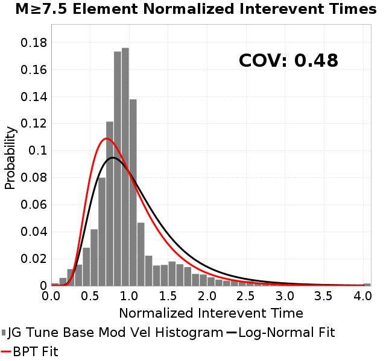
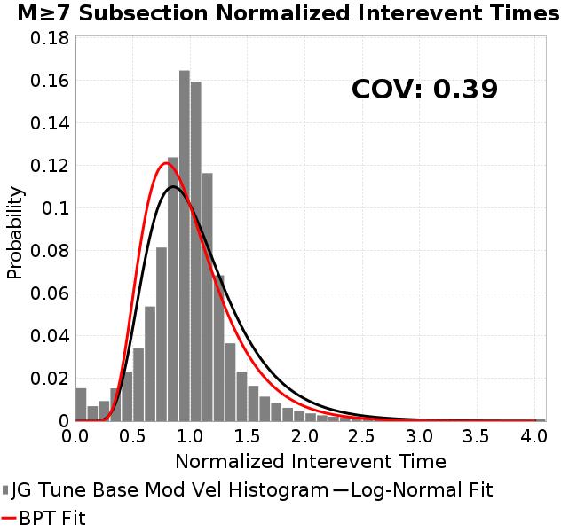
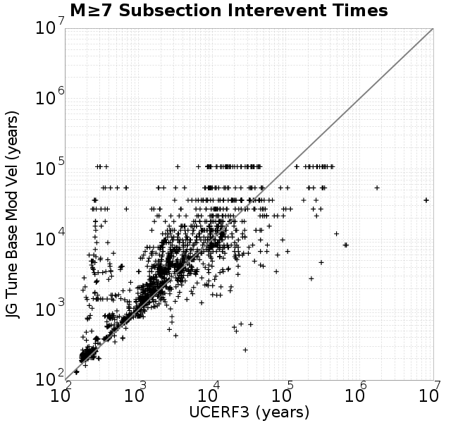

| Catalog | JG Tune Base Mod Vel |
|---|---|
| Author | Jacqui Gilchrist, 2017/11/26 |
| Description | New version of tuneBase1m, with patch-specific slip velocities. |
| Fault/Def Model | Fault Model 3.1, Geologic |
| Slip Velocity | Patch Variable, range=[0.007585216 4.999275], mean=0.995433 |
| Average Element Area | 0.90 km^2 |
| Length | 37,538,999 events in 112,714 years |
| Frictional Params | a=0.01, b=0.015, (b-a)=0.005, ddotEQ=1 |
| Scatter | 2-D Hist |
|---|---|
 |
| Scatter | 2-D Hist |
|---|---|
 |  |
| Scatter | |
|---|---|
| Distance/Velocity |  |
| M≥6 | M≥6.5 | M≥7 | M≥7.5 |
|---|---|---|---|
 |  |  |  |
| M≥6 | M≥6.5 | M≥7 | M≥7.5 | |
|---|---|---|---|---|
| Elements |  |  |  | |
| Subsections |  |  |  |  |
| Sections |  |  |

| Min Mag | Scatter | 2-D Hist |
|---|---|---|
| M≥6.0 |  |  |
| M≥6.5 |  |  |
| M≥7.0 |  | |
| M≥7.5 |  |
Subsections participate in a rupture if at least 20.0 % of its area ruptures
| Min Mag | Scatter | 2-D Hist |
|---|---|---|
| M≥6.0 |  |  |
| M≥6.5 |  |  |
| M≥7.0 |  |  |
| M≥7.5 |  |  |
A_1 = 0.01
fA = 0.1
B_1 = 0.015
Dc_1 = 1.0000000000000000818e-05
mu0_1 = 0.6
ddotStar_1 = 9.9999999999999995475e-07
ddotAB_1 = 9.9999999999999995475e-07
alpha_1 = 0.25
theta0_1 = 200000000
tau0_1 = 60
sigma0_1 = 100
sigmaFracPin = 0.1
maxThetaPin = 10000000000
ddotEQ_1 = 1
ddotEQFname = ddotEQ_mod.txt
stressOvershootFactor = 0.10000000000000000555
lameLambda = 30000
lameMu = 30000
slowSlip_1 = 0
nEq = 3e20
tStart = 55651082300705.9921875
maxT = 6.0381475e+13
faultFname = UCERF3.D3.1.1km.tri.2.flt
outFnameInfix = tuneBase1m
writeTau = 2
writeSigma = 2
writeSlip = 0
writeSlipSpeed = 0
writeState = 0
writeTheta = 2
writePED = 1
writeTransitions = 1
minDtWrite = 3.15e10
minDtWriteCoseismic = 0
minDtWriteInterseismic = 0
minMagWrite = 7.5
writeStiffness = 0
stressRateSpecification = 1
dMu3 = 0.0010000000000000000208
initTauFname = initTau.txt
initSigmaFname = initSigma.txt
initThetaFname = initTheta.txt
initSlipSpeedFname =
AFname =
BFname =
DcFname =
mu0Fname =
ddotStarFname =
ddotABFname =
alphaFname =
KTauFname =
KSigmaFname =
tFailFname =
tauFailFname =
tauDotFname =
sigmaDotFname =
pinnedFname = tuneBase1m.pin
neighborFname = neighbors.12
stressRateFname =
slowSlipFname =
writePatchFname =
DEBUG = 1
ZBrentUpperBracket = 0
ZBrentTol = 9.9999999999999995475e-07
lowSigmaAction = 0
KZeroFrac = 0.0
KZeroFname = UCERF3.D3.1.1km.tri.2.KZero0.8
slipInState1 = 1
resetStressingRates = 1